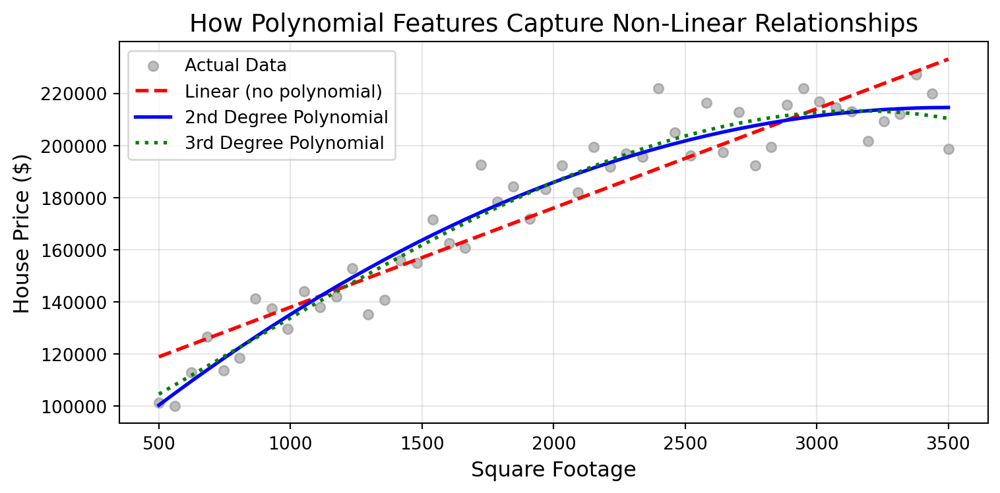

Consider this scenario: You’re building a model to predict house prices using just two features—square footage and year built. Your model achieves an RMSE of 20,247. Not bad, but could be better. Now, what if you created a new feature: house age (calculated as current year minus year built)? Suddenly, your RMSE drops to 17,138. By creating just one thoughtful feature, you’ve significantly improved your model’s performance.
This is the essence of feature engineering—the process of creating, transforming, and selecting features to help machine learning models better understand patterns in your data. It’s often said that in machine learning, “garbage in, garbage out.” Feature engineering is how we turn raw data into the high-quality input that models need to make accurate predictions.
Back in Chapter 21, you learned about dummy encoding as a way to convert categorical variables into numerical format so you could apply a linear regression model to that data. That was your first introduction to feature engineering! In this chapter, we’ll explore the full toolkit of feature engineering techniques—from encoding and scaling to creating new features and handling missing data. You’ll also learn how to build reproducible pipelines that prevent common pitfalls like data leakage. By the end, you’ll understand not just how to engineer features, but when and why each technique is appropriate for different situations.
NoteLearning Objectives
By the end of this chapter, you will be able to:
Explain why feature engineering is critical for model performance and when to invest effort in it
Apply encoding strategies for categorical variables (dummy/one-hot, label, and ordinal encoding)
Scale and normalize numerical features using StandardScaler and MinMaxScaler
Create new features using polynomial terms, interaction terms, and domain knowledge
Handle missing data strategically through imputation or deletion, including missingness indicators
Build end-to-end feature engineering pipelines with scikit-learn to prevent data leakage
Recognize when different techniques are appropriate based on your data, model, and goals
NoteFollow along in Colab
As you read through this chapter, we encourage you to follow along using the companion notebook in Google Colab (or another editor of your choice). This interactive notebook lets you run all the code examples covered here—and experiment with your own ideas.
Machine learning algorithms learn patterns from the data you provide. However, raw data often doesn’t directly represent the underlying patterns you want to learn. This is what we call the data representation problem.
Consider these examples:
Dates and times: The value “2024-03-15 14:30:00” doesn’t directly tell a model that it’s a Friday afternoon in March, even though this timing might be crucial for predicting website traffic
Text data: The phrase “excellent product!” needs to be converted into numbers before most algorithms can process it
Measurements: Height and weight are useful, but Body Mass Index (BMI), which combines these measurements, might be even more predictive for health-related predictions
Good feature engineering bridges this gap by transforming raw data into representations that make it easier for algorithms to identify patterns.
A Motivating Example: Predicting House Prices
Let’s see feature engineering in action. Imagine you’re predicting house prices using the Ames housing dataset. You might start with these basic features:
GrLivArea: Above-ground living area in square feet
YearBuilt: Original construction year
FullBath: Number of full bathrooms
Now, think like a homebuyer. What really matters when you’re evaluating a house?
Instead of year built, you probably care about house age—a 5-year-old house feels much newer than a 50-year-old house
Instead of just full bathrooms, you might want to know the total number of bathrooms (including half baths)
You might care about the square footage per room—a house with 3000 sq ft and 10 rooms (bedrooms, bathrooms, living vs dining room) may feel cramped, while 3000 sq ft with 5 rooms feels spacious and aligns with a more modern open concept.
Also, consider that these features are on different numeric scales—GrLivArea ranges from hundreds to thousands, YearBuilt ranges from 1800s to 2000s, and FullBath ranges from 0 to 4. With many ML algorithms (especially those based on distances or gradients), larger-valued features like GrLivArea can dominate smaller-valued features like FullBath, even if both are equally important to homebuyers. This is why standardizing (scaling) your features is often necessary.
By creating these engineered features and properly scaling them, you’re helping your model understand what makes houses valuable in ways that raw data alone can’t capture.
When to Invest in Feature Engineering
Feature engineering can be time-consuming. So when should you invest the effort?
Invest heavily in feature engineering when:
You have domain expertise: Knowledge about real estate, finance, healthcare, etc., can guide powerful feature creation. If you lack the knowledge or access to those that do have the knowledge, then some feature engineering efforts may be fruitless.
You have smaller datasets: With fewer than 10,000 rows, good features are critical.
You’re using traditional ML algorithms: Linear regression, decision trees, and SVMs benefit greatly from well-engineered features.
Interpretability matters: Engineered features can make models easier to explain to stakeholders.
You have time to experiment: Feature engineering is iterative—you create, test, and refine.
Invest less in feature engineering when:
You have massive datasets: With millions of rows, deep learning can automatically discover feature representations.
You need quick baseline models: Sometimes speed matters more than optimal performance.
Raw features already work well: If your baseline performs well, complex feature engineering may not be needed.
You’re using algorithms that handle feature interactions: Gradient boosting machines and neural networks can capture some interactions automatically.
TipThe 80/20 Rule
Data scientists often spend 80% of their time on data preparation and feature engineering, and only 20% on model selection and tuning. This isn’t inefficiency—it’s because good features make a bigger difference than fancy algorithms!
30.2 Common Feature Engineering Techniques
Encoding Categorical Variables
Machine learning algorithms work with numbers, not categories. When you have categorical variables (like neighborhood names or product types), you need to convert them into numerical format. You’ve already learned about dummy encoding—let’s review it and explore other encoding strategies.
Revisiting Dummy/One-Hot Encoding
Dummy encoding (also called one-hot encoding) creates separate binary columns for each category:
import pandas as pdimport numpy as np# Load the Ames housing dataames = pd.read_csv('../data/ames_clean.csv')# Look at the BldgType (building type) variableprint("Building types in the dataset:")print(ames['BldgType'].value_counts())# Create dummy variables for building typebldg_dummies = pd.get_dummies(ames['BldgType'], prefix='BldgType')# Show first few rowsprint("\nDummy encoded building types (first 5 rows):")bldg_dummies.head()
Building types in the dataset:
BldgType
1Fam 1220
TwnhsE 114
Duplex 52
Twnhs 43
2fmCon 31
Name: count, dtype: int64
Dummy encoded building types (first 5 rows):
BldgType_1Fam
BldgType_2fmCon
BldgType_Duplex
BldgType_Twnhs
BldgType_TwnhsE
0
True
False
False
False
False
1
True
False
False
False
False
2
True
False
False
False
False
3
True
False
False
False
False
4
True
False
False
False
False
This creates five new columns (one for each building type like BldgType_1Fam, BldgType_TwnhsE, etc.), each containing True or False (the equivalent to 1 or 0) to indicate whether that house is of that type.
When to use dummy encoding:
The categorical variable has no inherent order (like building types or neighborhood names)
You’re using linear models or algorithms that require numerical input
The number of categories is relatively small (typically fewer than 10-15)
Watch out for:
The dummy variable trap: For linear regression, drop one category to avoid multicollinearity
High cardinality: Variables with many categories (like ZIP codes with 40,000+ values) create too many features
# Avoid the dummy variable trap by dropping the first categorybldg_dummies_safe = pd.get_dummies(ames['BldgType'], prefix='BldgType', drop_first=True)print(f"\nOriginal columns: {len(bldg_dummies.columns)}")print(f"After dropping first: {len(bldg_dummies_safe.columns)}")
Label Encoding
While dummy encoding is powerful, it has a drawback: it can create many columns when you have categories with high cardinality (many unique values). The Ames dataset has 28 different neighborhoods—dummy encoding would create 28 new columns! This can quickly make your dataset unwieldy and slow down model training.
Label encoding offers a more compact alternative by assigning a unique integer to each category (or neighborhood in our example), creating just one column instead of many. However, this simplicity comes with an important caveat that you need to understand before using it.
from sklearn.preprocessing import LabelEncoder# Check how many neighborhoods we haveprint(f"Number of unique neighborhoods: {ames['Neighborhood'].nunique()}")print(f"\nSample neighborhoods:")print(ames['Neighborhood'].value_counts().head())# Apply label encodingle = LabelEncoder()ames['Neighborhood_Encoded'] = le.fit_transform(ames['Neighborhood'])# Show the mapping for a few examplesprint("\nLabel encoding results (first 10 rows):")ames[['Neighborhood', 'Neighborhood_Encoded']].head(10)
With tree-based models (decision trees, random forests) that can handle ordinal relationships
For ordinal variables with natural ordering (Small < Medium < Large)
When you need to save memory with high-cardinality features
When NOT to use label encoding:
With linear models—they’ll incorrectly assume the numbers have mathematical meaning (e.g., that “Suburbs=2” is twice “Downtown=0”)
For nominal categories with no inherent order
WarningCommon Pitfall
Never use label encoding for non-ordinal categorical variables with linear models! The model will treat the numeric codes as if they have magnitude (e.g., category 3 is “three times” category 1), which is rarely meaningful.
Ordinal Encoding
Not all categorical variables are created equal. Some categories have a natural, meaningful order—like rating scales (Poor < Fair < Good < Excellent), education levels (High School < Bachelor’s < Master’s < PhD), or t-shirt sizes (Small < Medium < Large < XL). These are called ordinal variables.
For ordinal variables, we want to preserve the inherent ordering in our encoding. Simply using label encoding might accidentally assign numbers that don’t reflect the true order (e.g., “Fair” might get 3 and “Poor” might get 1, but that’s arbitrary). Instead, we should create custom mappings that explicitly capture the meaningful order. This allows our models to understand that “Excellent” is better than “Good,” which is better than “Fair.”
The Ames dataset has several ordinal quality variables. Let’s use ExterQual (exterior material quality) as an example:
# Look at the exterior quality variableprint("Exterior quality categories:")print(ames['ExterQual'].value_counts().sort_index())# Create custom ordinal mapping that preserves the quality order# In the Ames data: Po = Poor, Fa = Fair, TA = Typical/Average, Gd = Good, Ex = Excellentquality_map = {'Po': 1, # Poor'Fa': 2, # Fair'TA': 3, # Typical/Average'Gd': 4, # Good'Ex': 5# Excellent}# Apply the mappingames['ExterQual_Encoded'] = ames['ExterQual'].map(quality_map)# Show the resultsprint("\nOrdinal encoding results (first 10 rows):")print(ames[['ExterQual', 'ExterQual_Encoded']].head(10))# Verify the encoding preserves orderprint("\nMean sale price by exterior quality:")print(ames.groupby('ExterQual_Encoded')['SalePrice'].mean().sort_index())
Exterior quality categories:
ExterQual
Ex 52
Fa 14
Gd 488
TA 906
Name: count, dtype: int64
Ordinal encoding results (first 10 rows):
ExterQual ExterQual_Encoded
0 Gd 4
1 TA 3
2 Gd 4
3 TA 3
4 Gd 4
5 TA 3
6 Gd 4
7 TA 3
8 TA 3
9 TA 3
Mean sale price by exterior quality:
ExterQual_Encoded
2 87985.214286
3 144341.313466
4 231633.510246
5 367360.961538
Name: SalePrice, dtype: float64
NoteKnowledge Check: Encoding Strategies
Question: You’re building a linear regression model to predict customer satisfaction scores. You have three categorical variables:
City (50 unique values: New York, Los Angeles, Chicago, etc.)
Product Type (4 unique values: Basic, Standard, Premium, Deluxe)
Customer Segment (3 unique values: A, B, C - with no inherent order)
Which encoding strategy would you use for each variable and why?
Click to reveal answer
City → Target encoding or label encoding (if using tree-based models). With 50 unique cities, dummy encoding would create 50 columns, leading to a sparse, high-dimensional dataset. For linear models, target encoding (replacing each city with average satisfaction for that city) can work well, though be careful of data leakage. For tree-based models, simple label encoding is fine.
Product Type → Ordinal encoding. The products have a natural order (Basic < Standard < Premium < Deluxe) that reflects increasing quality/features. Create a mapping like {'Basic': 1, 'Standard': 2, 'Premium': 3, 'Deluxe': 4}.
Customer Segment → Dummy encoding (one-hot). These segments have no inherent order, so dummy encoding is appropriate. With only 3 categories, this creates just 2-3 columns (use drop_first=True for linear regression to avoid multicollinearity).
Scaling and Normalization
Scaling and normalization are techniques that transform numerical features to a common range or distribution. While these terms are sometimes used interchangeably, they serve the same core purpose: putting all features on a level playing field so that no single feature dominates simply because of its numeric range.
ImportantWhy does this matter?
Many machine learning algorithms are sensitive to the scale of features. Imagine a dataset with house size (ranging from 500 to 5000 square feet) and number of bedrooms (ranging from 1 to 6). Without scaling, algorithms that use distance calculations—like k-Nearest Neighbors—would treat a difference of 100 square feet as much more significant than a difference of 1 bedroom, even though both might be equally important for predicting house prices.
The two most common approaches are:
Standardization (Z-score normalization): Transforms features to have a mean of 0 and standard deviation of 1. This centers your data and expresses values in terms of how many standard deviations they are from the mean.
Min-Max scaling (normalization): Transforms features to a fixed range, typically [0, 1]. This preserves the original distribution shape while compressing it into the specified range.
Let’s explore both methods and understand when to use each one.
StandardScaler (Z-score Normalization)
StandardScaler transforms features to have a mean of 0 and standard deviation of 1 based on:
\[z = \frac{x - \mu}{\sigma}\]
where \(x\) is the feature value, \(\mu\) is the mean and \(\sigma\) is the standard deviation. Let’s see this in action:
When you need features bounded in a specific range
For neural networks with sigmoid or tanh activation functions
When you want to preserve zero values in sparse data
When your data isn’t normally distributed
TipWhen Scaling Matters (and When It Doesn’t)
Scaling DOES matter for:
Linear regression with regularization (Lasso, Ridge, Elastic Net)
Support Vector Machines (SVM)
k-Nearest Neighbors (k-NN)
Neural networks
Principal Component Analysis (PCA)
K-means clustering
Gradient descent-based algorithms
Scaling DOESN’T matter for:
Tree-based models (decision trees, random forests, gradient boosting)
Naive Bayes
NoteKnowledge Check: When to Scale Features
Question: You’re working on three different prediction problems. For each scenario, decide whether you need to scale your features and which scaling method (if any) would be most appropriate:
Scenario 1: Predicting house prices using k-Nearest Neighbors (k-NN). Your features include square footage (ranging from 800-4,000), number of bedrooms (1-6), and year built (1920-2020).
Scenario 2: Predicting customer churn using a Random Forest classifier. Features include account age in days (30-3,650), monthly charges in dollars (20-150), and number of support calls (0-25).
Scenario 3: Predicting sales revenue using Ridge regression (L2 regularization). Features include advertising spend in thousands of dollars (1-500), website visits (100-50,000), and email open rate as a percentage (5-60).
Click to reveal answer
Scenario 1:Yes, scale using StandardScaler (or MinMaxScaler). k-NN is distance-based, so it’s highly sensitive to feature magnitude. Without scaling, square footage (800-4,000 range) would dominate the distance calculation over bedrooms (1-6 range), even though bedrooms might be equally important. StandardScaler is a good default choice.
Scenario 2:No scaling needed. Random Forest is tree-based and makes decisions through sequential splits, not distance or gradient calculations. Trees naturally handle features on different scales since they split based on thresholds, not absolute magnitudes. Scaling won’t hurt, but it won’t help either, and you can skip this preprocessing step.
Scenario 3:Yes, scale using StandardScaler. Ridge regression uses L2 regularization, which penalizes the magnitude of coefficients. If features are on different scales, the regularization will unfairly penalize features with larger numeric ranges. Standardizing puts all features on equal footing, ensuring the regularization works fairly across all features. This is critical for any regularized linear model (Ridge, Lasso, Elastic Net).
Creating New Features
So far, we’ve focused on encoding categorical variables and scaling numerical features—essentially preparing the raw data we already have. But some of the most powerful features are ones you create yourself by combining or transforming existing features in meaningful ways. This is where feature engineering becomes truly creative and where domain knowledge becomes increasingly important.
Creating new features allows you to:
Capture relationships that aren’t obvious in individual features (e.g., the ratio of living area to lot size)
Express domain insights that experts understand but raw data doesn’t capture (e.g., house age is often more meaningful than year built)
Help models learn non-linear patterns even when using simple algorithms (e.g., adding squared terms to linear regression)
Combine information from multiple features into a single, more predictive variable
TipThe role of domain knowledge
While techniques like polynomial features are somewhat mechanical, the most impactful features come from understanding the problem domain. A real estate expert knows that square footage per room matters. A healthcare professional understands that BMI (weight/height²) is more predictive than weight or height alone. A marketing analyst recognizes that customer lifetime value depends on purchase frequency × average order value.
These insights don’t come from algorithms—they come from talking to experts, studying the domain, and thinking deeply about what truly drives the outcome you’re trying to predict.
Let’s explore three main approaches to creating new features:
Polynomial Features
Real-world relationships are often non-linear. Consider house prices and square footage: the first 1,000 square feet might add $100,000 to a home’s value, but the next 1,000 square feet might only add $60,000, and the third 1,000 square feet might add just $40,000. This is diminishing returns—a curved relationship that a simple linear model (which assumes constant returns) would miss.
Polynomial features help capture these non-linear relationships by creating powers and products of your original features. When you add a squared term (\(\text{SqFt}^2\)) to your model, you’re allowing it to learn curves instead of just straight lines. When you add cubic terms (\(\text{SqFt}^3\)), you’re allowing even more complex curvature.
Let’s see how polynomial features capture different types of curves:

Figure 30.1: Comparison of linear vs polynomial relationships. The 2nd degree polynomial captures the gentle curve of diminishing returns, while the 3rd degree can model more complex patterns.
Notice how the linear model (red dashed line) misses the curve in the data, while the 2nd degree polynomial (blue line) captures the diminishing returns pattern nicely. The 3rd degree polynomial (green dotted line) can capture even more complex curves, but be careful—with higher degrees, you risk overfitting!
Squared terms: \(x_1^2, x_2^2\) (capture curvature in each feature)
Interaction terms: \(x_1 \cdot x_2\) (capture how features affect each other)
When to use polynomial features:
When relationships appear non-linear in scatter plots
To help linear models capture curvature
When you have relatively few features (polynomials grow exponentially!)
Watch out for:
Feature explosion: 10 features with degree=3 creates 220 features!
Overfitting: Higher degrees can lead to overly complex models
Computation time: More features = longer training time
NoteThe Reality of High-Dimensional Data
In our examples above, visualizing polynomial relationships is straightforward because we’re working with just one or two features. You can easily plot square footage vs. price and see the curve.
However, in real-world practice, you often deal with tens or even hundreds of features. Once you have more than 3 features, visualization becomes impossible, and identifying which features need polynomial terms becomes a significant challenge. You can’t simply “look at the curve” when working in 50-dimensional space!
This is why in practice, data scientists often:
Start with domain knowledge to identify likely non-linear relationships
Use exploratory analysis to examine scatter plots for key features
Apply regularization techniques (like Lasso) that automatically handle feature selection
Rely on tree-based models (like random forests) that inherently capture non-linear relationships without needing polynomial features
Be selective: Add polynomial features only for the most important features, not all of them
Interaction Terms
Interaction terms capture how the effect of one feature depends on another:
This interaction captures an important insight: an extra square foot in an excellent neighborhood is worth more than an extra square foot in a poor neighborhood.
Common interaction patterns:
Quantity × Quality: Size × Neighborhood rating
Time × Activity: Hour of day × Day of week (for predicting traffic)
Price × Demand: Product price × Season (for sales forecasting)
ImportantThe Interaction Term Challenge
Similar to polynomial features, creating interaction terms manually is reasonable when you have just a few features. You can thoughtfully identify which pairs of features might interact based on domain knowledge or exploratory analysis.
However, as your feature count grows, the number of potential interactions explodes even faster than polynomial terms. With 10 features, there are 45 possible pairwise interactions. With 50 features, there are 1,225 possible pairwise interactions. With 100 features, there are 4,950! Manually testing all these combinations is impractical, and including all of them leads to severe overfitting and computational issues.
This is where certain models shine: Decision trees, random forests, gradient boosted machines (like XGBoost), and neural networks are particularly valuable because they automatically identify and capture interaction relationships during training.
Decision trees naturally model interactions through their splitting process—a split on feature A followed by a split on feature B effectively creates an A × B interaction
Random forests and gradient boosting extend this capability across many trees, capturing complex interaction patterns
Neural networks learn interactions through their hidden layers, combining features in increasingly complex ways
This is one reason why tree-based models often perform well “out of the box” without extensive feature engineering—they’re discovering useful interactions automatically rather than requiring you to specify them manually.
Domain-Specific Feature Creation
While polynomial and interaction features are algorithmic approaches that you can apply to any dataset, domain-specific feature creation is where human expertise and creativity truly shine. This is where you step back from mechanical transformations and ask: “What do experts in this field actually care about? What drives the outcome I’m trying to predict?”
The most impactful features often come from this kind of domain knowledge. Instead of blindly creating \(x^2\) or \(x \times y\) for every feature, you thoughtfully create features that capture meaningful concepts in your problem domain:
A real estate agent might tell you that “price per square foot” and “home age” matter more than raw square footage or year built
A doctor might explain that BMI, blood pressure ratios, or glucose change over time are more diagnostic than individual measurements
A marketing analyst might reveal that “average order value,” “time since last purchase,” or “purchase frequency” better predict customer lifetime value than raw transaction counts
These features aren’t discovered through automated processes—they emerge from conversations with experts, reading domain literature, and developing intuition about what makes sense in context. Let’s see some examples in real estate:
# Real estate domain knowledgehouses = pd.DataFrame({'GrLivArea': [1500, 2000, 1800],'LotArea': [8000, 10000, 7500],'YearBuilt': [1990, 2005, 1978],'YearRemodAdd': [2015, 2005, 1978],'TotalBsmtSF': [1000, 1200, 900],'GarageArea': [400, 500, 350]})# Feature 1: House age (more intuitive than year built)current_year = pd.Timestamp.now().yearhouses['Age'] = current_year - houses['YearBuilt']# Feature 2: Was the house renovated?houses['Was_Renovated'] = (houses['YearRemodAdd'] > houses['YearBuilt']).astype(int)# Feature 3: Years since renovationhouses['Years_Since_Reno'] = current_year - houses['YearRemodAdd']# Feature 4: Ratio of living area to lot areahouses['Living_to_Lot_Ratio'] = houses['GrLivArea'] / houses['LotArea']# Feature 5: Total interior spacehouses['Total_Interior_SF'] = houses['GrLivArea'] + houses['TotalBsmtSF']# Feature 6: Total property sizehouses['Total_Property_SF'] = houses['Total_Interior_SF'] + houses['GarageArea']houses[['Age', 'Was_Renovated', 'Years_Since_Reno', 'Living_to_Lot_Ratio', 'Total_Interior_SF', 'Total_Property_SF']]
Age
Was_Renovated
Years_Since_Reno
Living_to_Lot_Ratio
Total_Interior_SF
Total_Property_SF
0
35
1
10
0.1875
2500
2900
1
20
0
20
0.2000
3200
3700
2
47
0
47
0.2400
2700
3050
TipTalk to Domain Experts
The best features come from understanding the domain. If you’re working on real estate, talk to agents. For healthcare, consult doctors. For e-commerce, speak with sales teams. They’ll reveal what truly matters—insights you can’t get from the data alone.
Handling Missing Data
Real-world data is messy, and missing values are inevitable. Whether it’s a survey respondent who skipped a question, a sensor that malfunctioned, or a data entry error, you’ll encounter gaps in your data.
How you handle these missing values can significantly impact your model’s performance and validity.
The challenge is that most machine learning algorithms can’t handle missing values—they’ll either throw an error or silently exclude observations with missing data. This means you need a strategy for dealing with missingness before you can train your models.
Why does this matter? Consider these scenarios:
If you drop all rows with any missing values, you might lose 50% of your data, severely limiting your model’s ability to learn
If you fill in missing values poorly, you introduce bias—for example, replacing all missing incomes with $50,000 when most missing values are actually from high earners who declined to answer
If you ignore the pattern of missingness, you might miss important signals—for instance, customers who don’t provide their phone number might behave differently than those who do
There are two main approaches: imputation (filling in missing values) and deletion (removing data with missing values). Let’s explore the most common imputation strategies first, then discuss when deletion might be appropriate.
Simple Imputation Strategies
Strategy 1: Mean/Median Imputation
What it does: Replace missing numerical values with the mean (average) or median (middle value) of the non-missing values in that feature.
When to use it:
For numerical features with missing values
When you believe missing values are randomly distributed (missing at random)
As a quick baseline to establish whether imputation helps
When the feature is roughly normally distributed (mean) or has outliers (median)
TipBest practice
Prefer median over mean for most cases, as the median is more robust to outliers and extreme values. The mean can be skewed by a few very large or small values, while the median represents the “typical” value better.
from sklearn.impute import SimpleImputer# Data with missing valuesdata = pd.DataFrame({'Age': [25, 30, np.nan, 45, np.nan, 35],'Income': [50000, 60000, 55000, np.nan, 70000, 65000]})print("Original data with missing values:")print(data)# Impute with median (more robust to outliers)imputer = SimpleImputer(strategy='median')imputed_data = imputer.fit_transform(data)imputed_df = pd.DataFrame(imputed_data, columns=['Age', 'Income'])print("\nAfter median imputation:")print(imputed_df)
Original data with missing values:
Age Income
0 25.0 50000.0
1 30.0 60000.0
2 NaN 55000.0
3 45.0 NaN
4 NaN 70000.0
5 35.0 65000.0
After median imputation:
Age Income
0 25.0 50000.0
1 30.0 60000.0
2 32.5 55000.0
3 45.0 60000.0
4 32.5 70000.0
5 35.0 65000.0
Strategy 2: Mode Imputation
What it does: Replace missing values in categorical variables with the most frequently occurring category (the mode).
When to use it:
For categorical features with missing values
When you believe the most common category is a reasonable default
When categories represent discrete choices rather than ordinal rankings
As a simple baseline for categorical data
TipBest practice
This works well when one category is dominant (appears much more frequently than others). If categories are evenly distributed, mode imputation essentially makes an arbitrary choice. In such cases, consider whether treating missingness as its own category (“Unknown”) might be more honest.
# Categorical data with missing valuescat_data = pd.DataFrame({'Color': ['Red', 'Blue', np.nan, 'Red', 'Blue', np.nan, 'Red']})print("Original categorical data:")print(cat_data)# Impute with most frequent value (mode)imputer = SimpleImputer(strategy='most_frequent')cat_data['Color_Imputed'] = imputer.fit_transform(cat_data[['Color']]).ravel()print("\nAfter mode imputation:")print(cat_data)
Original categorical data:
Color
0 Red
1 Blue
2 NaN
3 Red
4 Blue
5 NaN
6 Red
After mode imputation:
Color Color_Imputed
0 Red Red
1 Blue Blue
2 NaN Red
3 Red Red
4 Blue Blue
5 NaN Red
6 Red Red
Strategy 3: Constant Imputation
What it does: Fill all missing values with a specific constant value that you choose (like 0, -1, -999, or “Unknown”).
When to use it:
When you want to explicitly mark missing values rather than pretend you know what they should be
When 0 has special meaning in your domain (e.g., 0 items purchased, 0 days since last login)
When missing values might represent a distinct category (e.g., “Unknown”, “Not Applicable”)
For categorical variables where you want to preserve the missingness as information
TipBest practice
Choose your fill value carefully based on your domain. For numerical data, use a value that’s clearly outside the normal range (like -999 for age) so it’s obvious it’s a placeholder. For categorical data, use descriptive labels like “Unknown” or “Not_Provided” rather than arbitrary values. Consider combining this with a missingness indicator feature.
# Impute with a constant valueimputer = SimpleImputer(strategy='constant', fill_value='Unknown')cat_data['Color_Constant'] = imputer.fit_transform(cat_data[['Color']]).ravel()print("\nAfter constant imputation with 'Unknown':")print(cat_data)# Example with numerical data using a clear placeholderage_data = pd.DataFrame({'Age': [25, 30, np.nan, 45, np.nan, 35]})imputer_num = SimpleImputer(strategy='constant', fill_value=-999)age_data['Age_Imputed'] = imputer_num.fit_transform(age_data[['Age']]).ravel()print("\nNumerical constant imputation (placeholder: -999):")print(age_data)
After constant imputation with 'Unknown':
Color Color_Imputed Color_Constant
0 Red Red Red
1 Blue Blue Blue
2 NaN Red Unknown
3 Red Red Red
4 Blue Blue Blue
5 NaN Red Unknown
6 Red Red Red
Numerical constant imputation (placeholder: -999):
Age Age_Imputed
0 25.0 25.0
1 30.0 30.0
2 NaN -999.0
3 45.0 45.0
4 NaN -999.0
5 35.0 35.0
When to Drop vs. Impute
One of the most important decisions in handling missing data is whether to delete observations/features with missing values or impute (fill in) those missing values. This choice involves trade-offs between data quantity and data quality.
The fundamental trade-off:
Dropping data preserves the integrity of your remaining data (you’re only working with truly observed values), but you lose information and potentially introduce bias if the missing data isn’t random
Imputing data preserves your sample size, but you’re making assumptions about what the missing values should be, which could introduce different biases
Drop missing values when:
You have plenty of data and few missing values (< 5%)—losing a few rows won’t hurt your model’s ability to learn
Missing values occur completely at random (MCAR)—there’s no pattern to what’s missing, so dropping them won’t bias your results
The feature isn’t critical to your analysis—if a column is mostly empty, it probably won’t help predictions anyway
The missingness pattern suggests data quality issues—if an entire survey section is skipped or a sensor malfunctioned, those rows might be unreliable overall
# Create sample data for demonstrationsample_data = pd.DataFrame({'Age': [25, 30, np.nan, 45, np.nan, 35],'Income': [50000, 60000, 55000, np.nan, 70000, 65000]})# Drop rows with any missing valuesdata_dropped = sample_data.dropna()print(f"Original rows: {len(sample_data)}, After dropping: {len(data_dropped)}")print("\nData after dropping rows with missing values:")print(data_dropped)# Drop columns with more than 50% missingthreshold =0.5*len(sample_data)data_drop_cols = sample_data.dropna(thresh=threshold, axis=1)print(f"\nOriginal columns: {sample_data.shape[1]}, After dropping: {data_drop_cols.shape[1]}")print(data_drop_cols)
Original rows: 6, After dropping: 3
Data after dropping rows with missing values:
Age Income
0 25.0 50000.0
1 30.0 60000.0
5 35.0 65000.0
Original columns: 2, After dropping: 2
Age Income
0 25.0 50000.0
1 30.0 60000.0
2 NaN 55000.0
3 45.0 NaN
4 NaN 70000.0
5 35.0 65000.0
Impute missing values when:
Missing values are numerous (> 5%)—dropping rows would significantly reduce your dataset size and statistical power
You can’t afford to lose data—in small datasets, every observation matters
The missingness is not random (MAR or MNAR)—there’s a systematic pattern to what’s missing, so dropping those rows would introduce bias
The feature is highly predictive—you don’t want to lose an important feature just because some values are missing
You’re doing predictive modeling rather than statistical inference—slight bias from imputation may be acceptable if it improves predictions
TipPractical Advice
In practice, you should often try both approaches (dropping vs. imputing) and evaluate which gives better model performance on a validation set. The “best” approach depends on your specific dataset and prediction task. Don’t assume imputation is always better just because it preserves more data!
Advanced technique: Missingness indicator
This is one of the most valuable but underused techniques in feature engineering. The core insight is: Sometimes the fact that a value is missing is itself informative.
Why missingness can be informative:
Consider these real-world examples where missing data tells a story:
Income surveys: High earners often decline to report income due to privacy concerns. A missing income value might actually signal “likely high earner” rather than being random noise
Medical records: Missing test results might indicate a doctor didn’t think the test was necessary (suggesting the patient is healthier), or that the patient couldn’t afford it (suggesting lower socioeconomic status)
E-commerce: Customers who don’t provide a phone number might be more privacy-conscious and have different shopping behaviors
Credit applications: Missing employment history might indicate job instability or gaps in employment
In all these cases, we don’t just want to impute the missing value—we want to capture the fact that it was missing as a feature itself.
How to implement it:
The approach is simple: create a binary indicator variable (0 or 1) that flags whether a value was originally missing, then impute the original feature:
# Create fresh data for this exampleindicator_data = pd.DataFrame({'Age': [25, 30, np.nan, 45, np.nan, 35],'Income': [50000, 60000, 55000, np.nan, 70000, 65000]})# Create indicator for missingnessindicator_data['Age_Was_Missing'] = indicator_data['Age'].isna().astype(int)# Then impute the original columnindicator_data['Age'] = indicator_data['Age'].fillna(indicator_data['Age'].median())print("Data with missingness indicator:")print(indicator_data[['Age', 'Age_Was_Missing']])
Data with missingness indicator:
Age Age_Was_Missing
0 25.0 0
1 30.0 0
2 32.5 1
3 45.0 0
4 32.5 1
5 35.0 0
What this gives you:
Now your model has access to two pieces of information instead of one:
The imputed value (Age = 32.5 for rows that were missing)—this keeps your model from breaking due to missing data
The fact that it was missing (Age_Was_Missing = 1)—this lets the model learn that “missing age” might correlate with your target variable
When to use missingness indicators:
When you suspect missingness is not random—there’s a reason some values are missing
When you have domain knowledge suggesting missingness is meaningful
When exploratory analysis shows that rows with missing values have different outcomes than rows without missing values
As a defensive strategy—even if you’re not sure, adding the indicator is low cost and gives your model more information to work with
TipBest practice
Start by creating missingness indicators for a few key features where you suspect non-random missingness. Check whether these indicators are predictive by examining their feature importance scores after training. If they’re not useful, you can drop them later. But don’t systematically add indicators for every single feature—that clutters your feature space unnecessarily.
NoteKnowledge Check: Handling Missing Data
Question: You’re analyzing a customer dataset with 10,000 rows to predict purchase likelihood. You discover missing values in several features:
Income: 8% missing (800 rows)
Email Address: 45% missing (4,500 rows)
Age: 2% missing (200 rows)
Product Preference: 12% missing (1,200 rows)
Your exploratory analysis reveals that customers with missing income values actually have a higher average purchase rate (35%) compared to customers who provided income (22%).
For each feature, decide whether to drop or impute, choose an imputation strategy if applicable, and explain your reasoning:
Click to reveal answer
Income (8% missing): - Strategy: Impute with median + add missingness indicator - Reasoning: 8% is substantial enough that dropping would lose significant data. More importantly, the exploratory analysis revealed that missing income correlates with higher purchase rates—this is NOT missing at random! The missingness itself is informative (likely high earners declining to share). Use median imputation to fill the values so your model doesn’t break, but CREATE a binary Income_Was_Missing feature to capture this important signal.
Email Address (45% missing): - Strategy: Drop the feature or impute with constant value “missing@unknown.com” depending on use case - Reasoning: 45% missing is too much for reliable imputation. If email address is just for customer contact (not prediction), drop it from the model. If you believe having/not having an email is predictive behavior, you could dummy encode it or create a binary Has_Email feature (1 if provided, 0 if missing). Don’t try to “fill in” fake email addresses.
Age (2% missing): - Strategy: Drop rows with missing age OR impute with median - Reasoning: Only 2% missing—small enough that dropping these rows won’t significantly reduce your dataset size. This is the easiest approach. Alternatively, median imputation is fine here if you want to preserve every row. No need for missingness indicator since the percentage is so small and unlikely to be systematically informative.
Product Preference (12% missing): - Strategy: Impute with mode (most common category) OR treat “Missing” as its own category - Reasoning: This is categorical data, so median/mean don’t apply. With 12% missing, you don’t want to lose that much data. Mode imputation (most frequent product preference) is one option. However, “not providing a preference” might itself be a meaningful signal (indecisive customers?), so you could also treat “Missing” as its own category in your one-hot encoding.
30.3 Feature Engineering with Scikit-Learn
So far, we’ve learned individual feature engineering techniques—encoding, scaling, creating features, and handling missing data. But in practice, you need to apply multiple transformations in sequence, and you need to do so in a way that’s reproducible and prevents data leakage. Scikit-learn provides a systematic framework for chaining these transformations together while ensuring your workflow follows best practices, centering on two key concepts: transformers and pipelines.
Using Transformers
A transformer in scikit-learn is any object that can learn parameters from data (using .fit()) and apply transformations (using .transform()). This two-step process is crucial: the transformer learns statistics from your training data (like the mean and standard deviation for scaling), then applies those same learned statistics when transforming both training and test data. This ensures consistency across your datasets and, critically, prevents information from your test set from leaking into your training process:
from sklearn.preprocessing import StandardScalerfrom sklearn.model_selection import train_test_split# Sample datadata = pd.DataFrame({'feature1': [1, 2, 3, 4, 5, 6, 7],'feature2': [10, 20, 30, 40, 50, 60, 70]})# Split into training and test setstrain_data, test_data = train_test_split(data, test_size=0.3, random_state=42)# Create and fit scaler on TRAINING data onlyscaler = StandardScaler()scaler.fit(train_data) # Learns mean and std from training data# Transform both training and test data using training statisticstrain_scaled = scaler.transform(train_data)test_scaled = scaler.transform(test_data)print("Training data scaled (using training mean/std):")print(train_scaled)print("\nTest data scaled (using training mean/std):")print(test_scaled)
Training data scaled (using training mean/std):
[[-1.18321596 -1.18321596]
[ 0.16903085 0.16903085]
[-0.50709255 -0.50709255]
[ 1.52127766 1.52127766]]
Test data scaled (using training mean/std):
[[-2.53546276 -2.53546276]
[-1.85933936 -1.85933936]
[ 0.84515425 0.84515425]]
WarningPreventing Data Leakage
Critical rule: Always fit transformers on training data only, then apply them to both training and test data. Never fit on test data!
Why? If you fit on test data, information from the test set “leaks” into your model training process. This gives you unrealistically optimistic performance estimates that won’t hold up when you deploy your model on truly new data.
Building Pipelines for Reproducible Workflows
While transformers handle individual operations, real-world machine learning workflows require multiple sequential steps—perhaps imputation, then scaling, then modeling. Pipelines solve this by chaining multiple transformers and a final estimator (model) into a single object that you can fit and predict with in one step. This not only makes your code cleaner and more readable, but also ensures that all transformations are applied in the correct order and prevents common mistakes like forgetting to scale your test data:
from sklearn.pipeline import Pipelinefrom sklearn.preprocessing import StandardScalerfrom sklearn.linear_model import LinearRegression# Create a pipelinepipeline = Pipeline([ ('scaler', StandardScaler()), ('model', LinearRegression())])# Prepare data (using first 100 rows as an example)X = pd.DataFrame({'GrLivArea': [1200, 1500, 1800, 2100],'YearBuilt': [1990, 2000, 1985, 2015]})y = pd.Series([200000, 250000, 240000, 350000])# Fit the entire pipelinepipeline.fit(X, y)# Make predictions (scaling happens automatically!)predictions = pipeline.predict(X)print("Predictions:", predictions)
Prevents data leakage: Transformations are learned from training data only
Less code: One .fit() call instead of multiple steps
Easier deployment: The entire workflow is contained in one object
Prevents mistakes: You can’t forget to scale test data
Practical Example: End-to-End Pipeline
The previous example showed a simple pipeline with one transformer and one model, but real datasets often have a mix of numerical and categorical features that require different preprocessing steps. Scikit-learn’s ColumnTransformer allows you to apply different transformations to different columns, and when combined with Pipeline, you can build production-ready workflows that handle complex feature engineering automatically. Let’s build a complete pipeline for the Ames housing data that handles both numerical features (which need imputation and scaling) and categorical features (which need imputation and encoding):
Imputes missing values in numeric features (using median)
Scales numeric features (using StandardScaler)
Imputes missing values in categorical features (with “missing”)
One-hot encodes categorical features
Trains a Ridge regression model
All in one reusable, production-ready object!
TipTry It Yourself
Extend the pipeline above by:
Adding polynomial features for numeric variables (use PolynomialFeatures)
Creating a custom feature for house age (current year - YearBuilt)
Trying different models in the final step (LinearRegression, DecisionTreeRegressor, etc.)
Experimenting with different imputation strategies
Compare the performance of your enhanced pipeline to the basic version. Which changes made the biggest difference?
30.4 Beyond the Basics
Feature engineering is a vast field with many additional techniques beyond what we’ve covered in this chapter. The techniques you’ve learned—encoding, scaling, feature creation, handling missing data, and pipelines—form a solid foundation for most machine learning projects. However, as you go deeper into machine learning and work on more complex problems, you’ll benefit from continuing to learn new and alternative feature engineering approaches. Each new technique you master expands your toolkit and gives you more ways to extract signal from data.
Here are some more advanced techniques you’ll encounter as you continue your machine learning journey. No need to memorize these, rather, just click on a few to get an idea of what they do.
NoteTarget Encoding (Mean Encoding)
Summary: Replace categorical values with the mean of the target variable for that category. For example, replace “Neighborhood_A” with the average house price in that neighborhood.
Business Application: E-commerce companies use this to encode customer segments, replacing segment IDs with the average purchase amount per segment, helping predict individual customer value more accurately than one-hot encoding when you have hundreds of segments.
NoteBinning/Discretization
Summary: Convert continuous numerical features into categorical bins or groups (e.g., converting age into “young,” “middle-aged,” “senior” or income into quartiles).
Business Application: Credit card companies bin transaction amounts into risk categories (small/medium/large) because fraud patterns often differ by transaction size brackets rather than following a smooth continuous relationship.
NoteTime-Series Features
Summary: Create lag features (values from previous time periods), rolling statistics (moving averages, rolling standard deviations), and time-based features (day of week, seasonality indicators).
Business Application: Retailers use lag features and rolling averages of past sales to predict inventory needs, incorporating patterns like “sales this week correlate with sales 7 days ago” and “moving average indicates trend.”
NoteText Feature Extraction
Summary: Transform text into numerical features using techniques like TF-IDF (term frequency-inverse document frequency), word embeddings, or counting specific keywords.
Business Application: Customer service teams extract features from support tickets (sentiment scores, urgency keywords, product mentions) to automatically route tickets to the right department and prioritize urgent issues.
NoteFeature Crosses
Summary: Create new features by multiplying or combining multiple features together, similar to interaction terms but often used in larger-scale combinations (e.g., crossing city × day_of_week × hour to predict traffic).
Business Application: Ride-sharing companies cross location, time of day, and weather conditions to predict surge pricing needs—each combination tells a different story about demand.
NoteDimensionality Reduction (PCA, t-SNE, UMAP)
Summary: Compress many features into fewer dimensions while preserving as much information as possible. PCA finds linear combinations; t-SNE and UMAP capture non-linear patterns.
Business Application: Financial institutions use PCA to reduce hundreds of economic indicators down to a handful of principal components that capture the major drivers of market behavior, simplifying risk models.
NoteFeature Selection Methods
Summary: Automatically identify which features are most important and discard the rest using techniques like Lasso regression (which zeros out unimportant features), mutual information, or recursive feature elimination.
Business Application: Healthcare ML models use feature selection to identify which of hundreds of patient measurements (vitals, lab tests, symptoms) are most predictive of disease, improving model interpretability for doctors.
NoteAutomated Feature Engineering Tools
Summary: Tools like Featuretools, tsfresh, and AutoFeat automatically generate many candidate features from your raw data, then select the most promising ones.
Business Application: Marketing teams use automated feature engineering to explore thousands of potential features from customer behavior data (website clicks, email opens, purchase history) without manually creating each one.
Feature engineering transforms raw data into representations that help machine learning models learn better. It’s where data science becomes as much art as science, blending technical skills with domain knowledge and creativity. The techniques you’ve learned in this chapter—encoding categorical variables, scaling numerical features, creating new features through transformations and domain knowledge, and handling missing data strategically—form the foundation of effective machine learning practice.
Two critical principles should guide your feature engineering efforts. First, feature engineering often matters more than model selection—a simple model with well-engineered features typically outperforms a sophisticated model with poor features. Second, always use scikit-learn pipelines to prevent data leakage by ensuring transformations are fit on training data only, then applied consistently to both training and test data. Pipelines make your workflow reproducible and deployment-ready while protecting against common mistakes.
Finally, remember that feature engineering is iterative and context-dependent. The “best” approach depends on your specific data, model, and goals. Use dummy encoding for nominal categories with linear models, but label encoding may be fine for tree-based models. Scale features for distance-based algorithms, but not for decision trees. Create features from domain knowledge when possible, as these often prove most powerful. Test different approaches, measure their impact on model performance, and let the results guide your decisions. As you gain experience, you’ll develop intuition for which techniques work best in different situations.
30.6 End of Chapter Exercises
Now it’s time to apply what you’ve learned! These exercises will give you hands-on experience with feature engineering using the Ames housing dataset.
TipBefore You Start
Make sure you have:
The ames_clean.csv dataset loaded into a pandas DataFrame
Defined your features (X) and target variable (y = SalePrice)
NoneExercise 1: Encoding Categorical Variables
Objective: Practice different encoding strategies on the Ames dataset.
Tasks:
Identify all categorical variables in the Ames dataset (use .select_dtypes(include='object')).
For the MSZoning variable (general zoning classification):
Apply one-hot encoding using pd.get_dummies()
How many new columns were created?
Use the drop_first=True parameter. Why is this important for linear regression?
For the OverallQual variable (overall material and finish quality, rated 1-10):
Although this is stored as an integer, it’s actually an ordinal variable. Why doesn’t it need special encoding?
Create a scatter plot showing the relationship between OverallQual and SalePrice. Is the relationship linear or non-linear?
Challenge: The Ames dataset has KitchenQual (kitchen quality: Ex, Gd, TA, Fa, Po). Create a custom ordinal encoding mapping for this variable and apply it. Verify your encoding makes sense by comparing mean sale prices across quality levels.
Hints:
For task 2, remember that one-hot encoding creates k columns for k categories (or k-1 if you use drop_first=True)
For task 4, use a dictionary like quality_map = {'Po': 1, 'Fa': 2, ...} and apply it with .map()
Check your results with groupby() and .mean() to ensure higher quality values correspond to higher prices
NoneExercise 2: Feature Scaling
Objective: Understand the impact of scaling on different algorithms.
Tasks:
Select three numerical features from Ames: GrLivArea, YearBuilt, and GarageArea.
Calculate and compare their ranges (max - min) and standard deviations.
Explain why these features are on very different scales.
Apply StandardScaler to these three features:
Split your data into train (80%) and test (20%) sets first.
Fit the scaler on the training data only.
Transform both training and test data.
Verify that the scaled training data has mean ≈ 0 and std ≈ 1.
Apply MinMaxScaler to the same features:
Follow the same train/test split process.
Verify that the scaled training data ranges from 0 to 1.
Compare: Which scaler would you prefer if you discovered extreme outliers in GrLivArea? Why?
Challenge: Build two linear regression models predicting SalePrice:
Model A: Using the original unscaled features.
Model B: Using StandardScaler on the features.
Compare their R² scores. Does scaling improve performance for linear regression? Why or why not?
Hints:
Use train_test_split from sklearn.model_selection
Always fit scalers on training data only: scaler.fit(X_train)
Check scaled data properties with .mean() and .std() for StandardScaler
Linear regression without regularization typically doesn’t require scaling, but it doesn’t hurt
The real benefit of scaling shows up with regularized models (Ridge, Lasso) or distance-based algorithms (k-NN)
NoneExercise 3: Creating New Features
Objective: Engineer domain-specific features for house price prediction.
Tasks:
Create the following new features from existing Ames variables:
Use ColumnTransformer to apply different pipelines to different column types:
Define lists of numerical and categorical features.
Create a preprocessor that applies the appropriate pipeline to each feature type.
Create a complete pipeline that includes preprocessing and a model:
Use the preprocessor from task 2.
Add a Ridge regression model as the final step.
Fit the pipeline on training data and evaluate on test data.
Challenge: Extend your pipeline to include feature engineering:
Create a custom transformer using FunctionTransformer or write your own transformer class that adds engineered features (like HouseAge, TotalBathrooms, etc.).
Insert this transformer at the beginning of your pipeline, before the preprocessing steps.
Compare the performance of your enhanced pipeline to the basic pipeline from task 3.